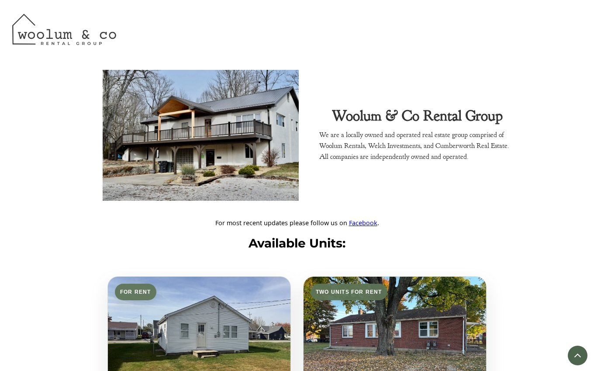

Woolum Rentals
From an available unit to its photos and application.
Visit the live website ↗Organization
Woolum & Co Rental Group
Project type
Rental listing website
My role
Rental listing layouts, photo galleries, and application links
The challenge
Prospective renters need to tell at a glance whether a unit fits, then find pictures, terms, and the right application. They also need a next step when nothing is available.
My approach
I worked on the rental listing pages and galleries so visitors can go from a short availability summary to an individual unit. Application links stay with the listing, and a separate waitlist gives renters a route back when the current selection is small.
This property-rental project serves a different visitor and application process from the brokerage redesign.

